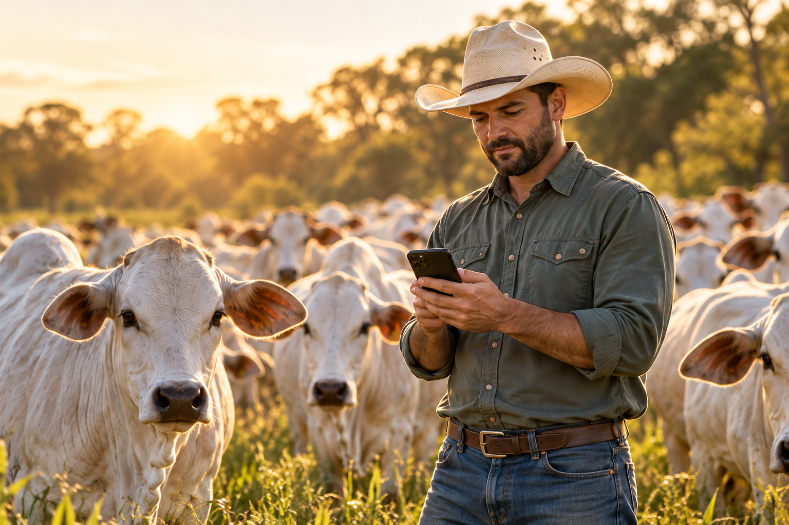
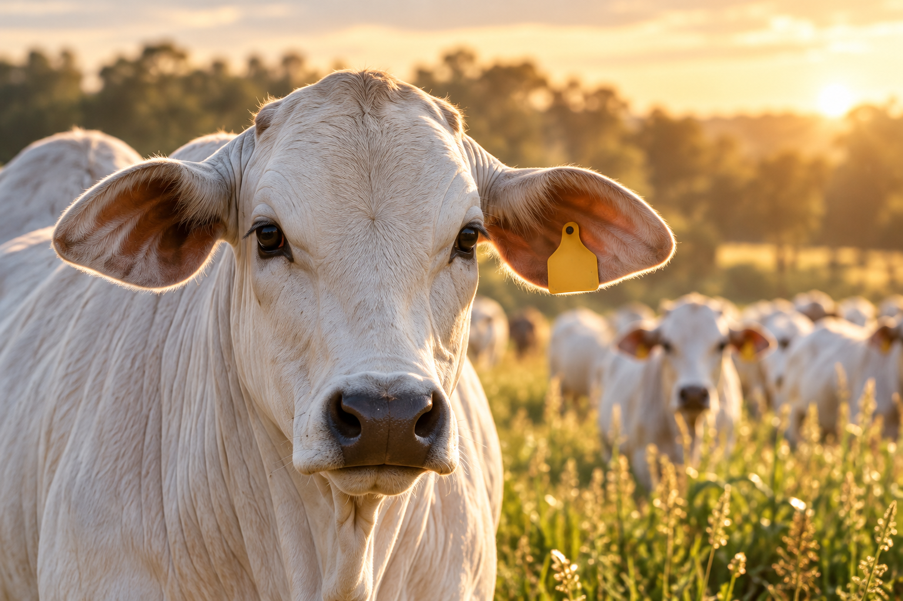

Cada animal tem uma história.
Matriz 0284
- Nascimento
Registro e identificação - Reprodução
Histórico dos manejos - Pesagem
Acompanhamento da evolução
Tela ilustrativa
Referência técnica, não landing final nem sistema publicado. Todos os valores abaixo são ilustrativos.
Tela ilustrativa


Tela ilustrativa
Consulte informações e prepare tarefas. Você revisa. Você confirma.
Quais tarefas estão pendentes?
Vamos revisar a agenda da fazenda.
Tela ilustrativa. Não há chamada de IA nesta referência.
Tela ilustrativa
Tela ilustrativa
RFID com leitor homologado, NFC compatível, câmera ou busca manual. A compatibilidade depende do equipamento e da plataforma.
Não. A operação prevê alternativas manuais para os manejos.
Formulário previsto para integração. Os campos desta referência estão desabilitados e não enviam dados.